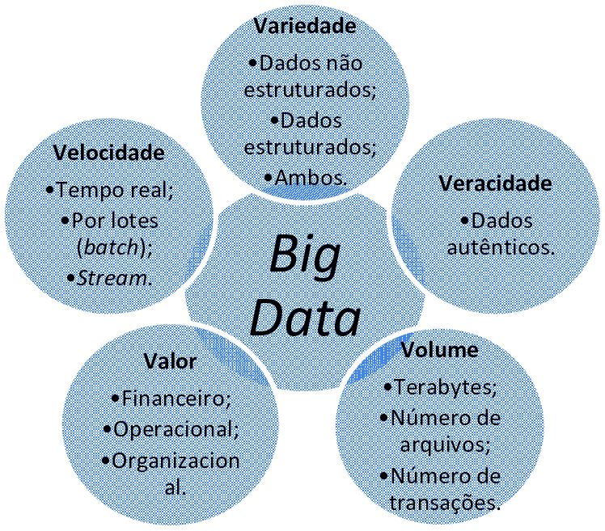
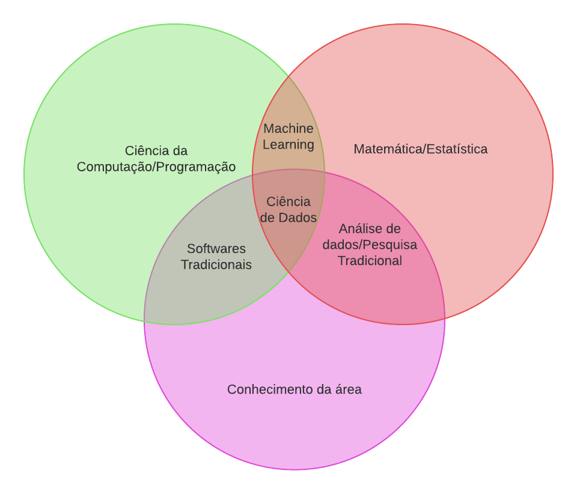

1 Visão Geral de Ciência de Dados
1.1 Introdução
Nas últimas décadas, dados passaram a ocupar um papel central nas decisões econômicas, organizacionais e governamentais. Atividades cotidianas como compras online, interações em redes sociais ou o uso do GPS em smartphones geram continuamente grandes volumes de dados, que alimentam o que hoje se convencionou chamar de economia de dados.
Esse fenômeno não surgiu de forma repentina. Ele é resultado de um processo histórico no qual a coleta, o armazenamento e a análise de dados foram progressivamente incorporados às práticas de gestão, pesquisa e tomada de decisão. Compreender essa trajetória é fundamental para entender por que a Ciência de Dados se tornou uma área central no mundo contemporâneo.
1.2 A Economia de Dados: Um Breve Histórico
As raízes da economia de dados remontam ao século XIX, quando jornais norte-americanos passaram a coletar informações sistemáticas sobre seus leitores e a realizar levantamentos para antecipar resultados eleitorais. Já nesse período inicial, dados eram utilizados como instrumento para reduzir incertezas e orientar decisões editoriais e comerciais, ainda que de forma incipiente e pouco padronizada (Harkness, 2021a).
No início do século XX, com a consolidação do marketing como área organizacional, empresas e pesquisadores passaram a estruturar departamentos dedicados ao estudo sistemático do comportamento do consumidor. A coleta de dados deixou de ser episódica e passou a integrar processos contínuos de análise, voltados à compreensão de mercados, preferências e padrões de consumo (Harkness, 2021a).
A partir da década de 1930, a introdução de métodos estatísticos de amostragem, notadamente os trabalhos associados a George Gallup, marcou uma mudança qualitativa importante. Previsões baseadas em dados passaram a apoiar-se em fundamentos estatísticos mais sólidos, substituindo abordagens baseadas em grandes volumes de respostas não controladas por técnicas cientificamente mais rigorosas (Harkness, 2021b).
Entre as décadas de 1950 e 1980, empresas como a Nielsen consolidaram sistemas de observação contínua de hábitos de consumo e audiência. Esse período reforçou uma distinção central na economia de dados: observar comportamentos reais, de forma sistemática, frequentemente produz informações mais confiáveis do que simplesmente perguntar aos indivíduos sobre suas intenções ou opiniões Harkness (2021c).
Com a digitalização da economia a partir dos anos 1990, o uso de códigos de barras, programas de fidelidade e, posteriormente, plataformas digitais e redes sociais transformou os dados em um ativo estratégico de escala global. A capacidade de coletar, armazenar e analisar grandes volumes de informações passou a redefinir modelos de negócio e estruturas competitivas em diversos setores (Harkness, 2021c).
Mais recentemente, o avanço de modelos de inteligência artificial, como os grandes modelos de linguagem, representa o estágio mais sofisticado dessa trajetória. Esses sistemas dependem fortemente de grandes volumes de dados para seu treinamento e funcionamento, evidenciando que, na economia contemporânea, dados não são apenas um subproduto das atividades organizacionais, mas um recurso central que condiciona inovação, eficiência e poder econômico (Harkness, 2021d).
1.3 Big Data e a Explosão do Volume de Dados

O relatório especial The Data Deluge, publicado pela The Economist (The Economist, 2010), marcou um ponto de inflexão na forma como economistas, gestores e formuladores de políticas passaram a enxergar os dados na economia contemporânea. O texto parte da constatação de que o mundo entrou em uma era caracterizada por uma produção de dados sem precedentes, impulsionada pela digitalização de processos, pela popularização da internet, pelo uso massivo de dispositivos móveis e pela automação de atividades econômicas e sociais.
O artigo destaca que o crescimento do volume de dados não é apenas quantitativo, mas também qualitativo: empresas e governos passaram a registrar transações, comportamentos e interações em níveis de detalhe antes inimagináveis. Esse fenômeno transforma dados em um ativo econômico estratégico, comparável a recursos tradicionais como capital e trabalho, mas com características próprias, como alta reutilização e forte dependência de capacidades analíticas.
A The Economist enfatiza que o verdadeiro desafio não reside na coleta dos dados, mas em sua organização, análise e interpretação. Grandes volumes de dados, por si só, não geram conhecimento nem vantagem competitiva. Somente quando combinados com métodos estatísticos, computacionais e analíticos adequados é que os dados podem apoiar decisões gerenciais mais informadas, melhorar previsões e revelar padrões econômicos relevantes.
Por fim, a matéria alerta para os riscos associados à “ilusão dos dados”: quanto maior o volume de informações disponíveis, maior também a probabilidade de erros, correlações espúrias e interpretações equivocadas. Nesse contexto, competências analíticas sólidas tornam-se essenciais para administradores, economistas e profissionais das ciências sociais aplicadas, que passam a lidar com um ambiente decisório cada vez mais orientado por dados.
Este crescimento exponencial da produção de dados levou ao surgimento do conceito de Big Data, frequentemente caracterizado pelos chamados cinco Vs: volume, velocidade, variedade, veracidade e valor. Esses atributos ajudam a compreender não apenas a quantidade de dados gerados, mas também os desafios associados ao seu processamento e uso.
Esse aumento no volume e na complexidade dos dados tornou insuficiente o uso exclusivo de ferramentas tradicionais, como planilhas eletrônicas, e criou a necessidade de métodos, linguagens e infraestruturas mais robustas para análise. Não por acaso, publicações de referência na área de negócios passaram a destacar dados como um dos recursos mais valiosos da economia contemporânea.
Outro marco simbólico importante na consolidação da chamada economia de dados foi a capa da revista The Economist, publicada em 2017, cujo título era The World’s Most Valuable Resource (“O recurso mais valioso do mundo”) e cujo subtítulo anunciava Data and the new rules of competition (“Dados e as novas regras da competição”). A mensagem central não era apenas a comparação entre dados e petróleo, mas a ideia de que os dados haviam se tornado o principal recurso estratégico capaz de redefinir a dinâmica competitiva entre empresas e setores (The Economist, 2017).
Diferentemente de recursos tradicionais, os dados não geram valor de forma automática. Seu valor emerge da capacidade de coletá-los, organizá-los, analisá-los e, sobretudo, utilizá-los de maneira sistemática na tomada de decisão. Nesse sentido, a capa da The Economist aponta para uma mudança mais profunda: empresas competitivas passam a ser aquelas capazes de transformar dados em conhecimento operacional e vantagem estratégica contínua.
Essa mudança implica novas regras de competição. Escala, velocidade de análise, capacidade de experimentação e aprendizado contínuo tornam-se fatores centrais. Organizações que dominam esses elementos conseguem adaptar produtos, processos e estratégias com maior rapidez, enquanto aquelas que tratam dados apenas como subprodutos operacionais tendem a perder relevância.
Ao destacar os dados como o recurso mais valioso da economia contemporânea, a revista reforça a necessidade de métodos, ferramentas e competências voltadas não apenas à análise técnica, mas à integração entre dados, estratégia e decisão. É nesse contexto que a Ciência de Dados se consolida como área essencial para a Administração, indo além do uso de tecnologias específicas e passando a influenciar diretamente a forma como as organizações competem.

1.4 O que é Ciência de Dados?
Diante desse contexto, surge a Ciência de Dados como uma abordagem estruturada para extrair significado e valor de grandes volumes de dados. Embora o termo possa parecer intimidador, sua ideia central é relativamente simples: usar métodos analíticos e computacionais para transformar dados brutos em informações úteis para a tomada de decisão.
De forma sintética, a Ciência de Dados integra conhecimentos de estatística, computação e domínio do negócio, combinando técnicas dessas áreas para lidar com problemas reais.

Essa característica interdisciplinar explica tanto o potencial da área quanto a diversidade de formações presentes em equipes de dados.
1.5 Metodologias e Processos: CRISP-DM
A prática da Ciência de Dados costuma ser organizada por meio de metodologias de projeto. Uma das mais difundidas é o CRISP-DM (Cross Industry Standard Process for Data Mining) (IBM Corporation, 2023), que estrutura o trabalho em etapas iterativas, desde o entendimento do problema de negócio até a implantação de soluções baseadas em dados.

Esse modelo destaca que projetos de dados raramente seguem um caminho linear. É comum que análises retornem a etapas anteriores à medida que novos insights surgem ou que hipóteses iniciais precisem ser revistas.
1.6 Da Ciência de Dados aos profissionais que a tornam possível
Ao longo deste capítulo, vimos como a chamada economia de dados se consolidou historicamente e por que a explosão no volume e na complexidade das informações tornou necessária uma abordagem estruturada, hoje conhecida como Ciência de Dados. Também discutimos que gerar valor a partir de dados exige mais do que tecnologia: requer métodos, organização e capacidade de transformar informação em decisão.
Na prática, esse trabalho não é realizado por um único tipo de profissional. Projetos orientados por dados envolvem funções distintas, com responsabilidades e competências complementares. No próximo capítulo, apresentamos os principais papéis profissionais na área de dados — Analista de Dados, Cientista de Dados e Engenheiro de Dados — e discutimos como eles se relacionam com problemas reais de Administração e áreas afins.